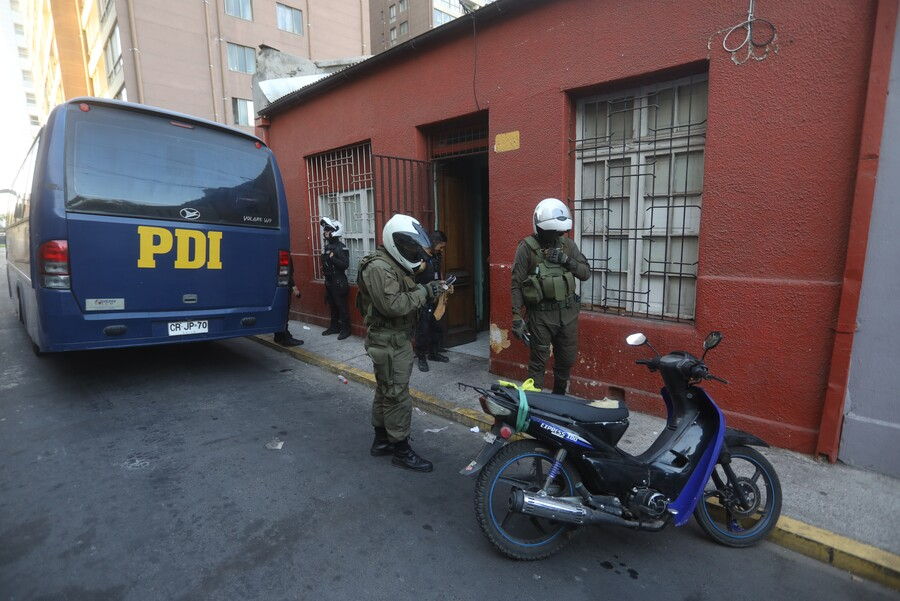

Este miércoles se realizó un nuevo desalojo de un inmueble habitado irregularmente
(cité) en la calle Wenceslao Sánchez, en Estación Central, tras numerosas denuncias
de vecinos por tráfico de drogas. Al lugar acudieron el alcalde de la comuna,
Felipe Muñoz y la delegada presidencial de la Región Metropolitana, Constanza Martínez.
El jefe comunal indicó que este “era un sector que estaba sujeto a muchas prácticas
delictuales, como el tráfico de drogas”. Por su parte, la delegada señaló que este es
el octavo desalojo con este modus operandi en el último tiempo”.